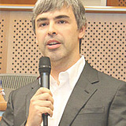

Визначення TED
TED - це щорічна конференція, що проводиться в США, про унікальні проекти та інновації, які несуть в собі ідеї зміни і розвитку суспільства. Девіз конференції «Ideas worth spreading» (дослівно, «Ідеї, гідні розповсюдження») відображає місію конференції - нести ідеї, які здатні змінити світ на краще.
TED охоплює багато сфер нашого життя - освіту, мистецтво, науку, спорт, соціологію, медицину, підприємництво, енергозбереження та інше. Зі сцени TED про свої ідеї розповідають провідні вчені світу, політологи та соціологи, художники і дизайнери, програмісти і професори університетів.
Серед найвідоміших особистостей, що виступали на конференції, можна відзначити нобелівських лауреатів Джеймса Уотсона і Мюррея Гелл-Манна, колишнього президента США - Білла Клінтона, засновника Wikipedia Джиммі Вейлза, засновників Google Ларрі Пейджа і Сергія Бріна, засновника Microsoft Білла Гейтса, відомого дизайнера Філіпа Старка, співака Боно, прем'єр-міністра Великобританії Гордона Брауна.
Назва конференції походить від заголовних літер слів
Technology Entertainment DesignФокус уваги першої конференції був зосереджений саме на цих областях діяльності людини – Технології, Розваги, Дизайн.
-
Мюррей Гелл-Манннобелівський лауреат
-

Білл Клінтонколишній президент США
-
Джиммі Уелсзасновник Wikipedia
-

Ларрі Пейджзасновник Google